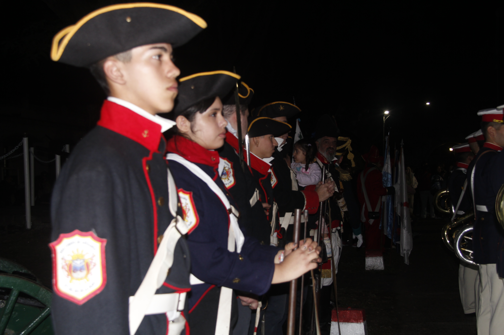
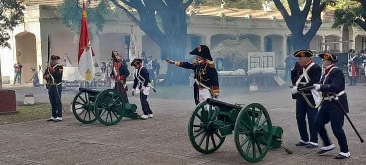

Circulo de Recreacionistas
RECREACIONISTAS
El CIRH XIX es una agrupación de recreación histórica argentina enfocada a la investigación y recreación
de unidades militares del Siglo XIX .
¿Quienes Somos?
Nuestro grupo tiene sus orígenes en el 51ème de Ligne, sección que fue creada para participar en
el 200 aniversario de la batalla de Waterloo bajo el ala del Museo Histórico de Valencia.
A mediados de 2016, con la intención de ampliar los horizontes del grupo, se constituye el CIRH XIX, (Círculo de Recreación Histórica del Siglo XIX) recreando el Batallón 1 de Cazadores de los Andes y proyectando varias unidades más como el 87th Prince of Wales Irish y el Regimiento Fijo de Buenos Ayres.
A mediados de 2016, con la intención de ampliar los horizontes del grupo, se constituye el CIRH XIX, (Círculo de Recreación Histórica del Siglo XIX) recreando el Batallón 1 de Cazadores de los Andes y proyectando varias unidades más como el 87th Prince of Wales Irish y el Regimiento Fijo de Buenos Ayres.



Nuestras Actividades
Organizar recreaciones históricas en las que participarán nuestros integrantes y a las que serán
invitados grupos y asociaciones afines.
Cuando seamos los invitados, participaremos en recreaciones históricas o actividades análogas, organizadas por otros grupos y asociaciones similares.
Para mejorar el nivel de fidelidad histórica de las recreaciones, se promoverá el estudio y la investigación de temas de historia militar en general y en particular los referidos al ejercicio y maniobra de tropas, a las armas y a su manejo, a la uniformología y confección del vestuario.
Se fomentará la camaradería entre nuestros integrantes mediante la realización de reuniones periódicas, conferencias, seminarios, visitas a museos y exposiciones relacionadas con los objetivos establecidos.
Estableceremos relaciones con otras entidades cuyo objeto sea similar o complementario. Y en general realizaremos todas las actividades que nuestros integrantes consideren que tiendan al mejor cumplimiento de los objetivos señalados.
Cuando seamos los invitados, participaremos en recreaciones históricas o actividades análogas, organizadas por otros grupos y asociaciones similares.
Para mejorar el nivel de fidelidad histórica de las recreaciones, se promoverá el estudio y la investigación de temas de historia militar en general y en particular los referidos al ejercicio y maniobra de tropas, a las armas y a su manejo, a la uniformología y confección del vestuario.
Se fomentará la camaradería entre nuestros integrantes mediante la realización de reuniones periódicas, conferencias, seminarios, visitas a museos y exposiciones relacionadas con los objetivos establecidos.
Estableceremos relaciones con otras entidades cuyo objeto sea similar o complementario. Y en general realizaremos todas las actividades que nuestros integrantes consideren que tiendan al mejor cumplimiento de los objetivos señalados.
Nuestros Objetivos
Promover, desarrollar y prestigiar en la Argentina la recreación histórica principalmente la
correspondiente al período de las guerras de fines del siglo XVIII y del siglo XIX.
Satisfacer los intereses históricos y lúdicos de sus integrantes.
Satisfacer los intereses históricos y lúdicos de sus integrantes.